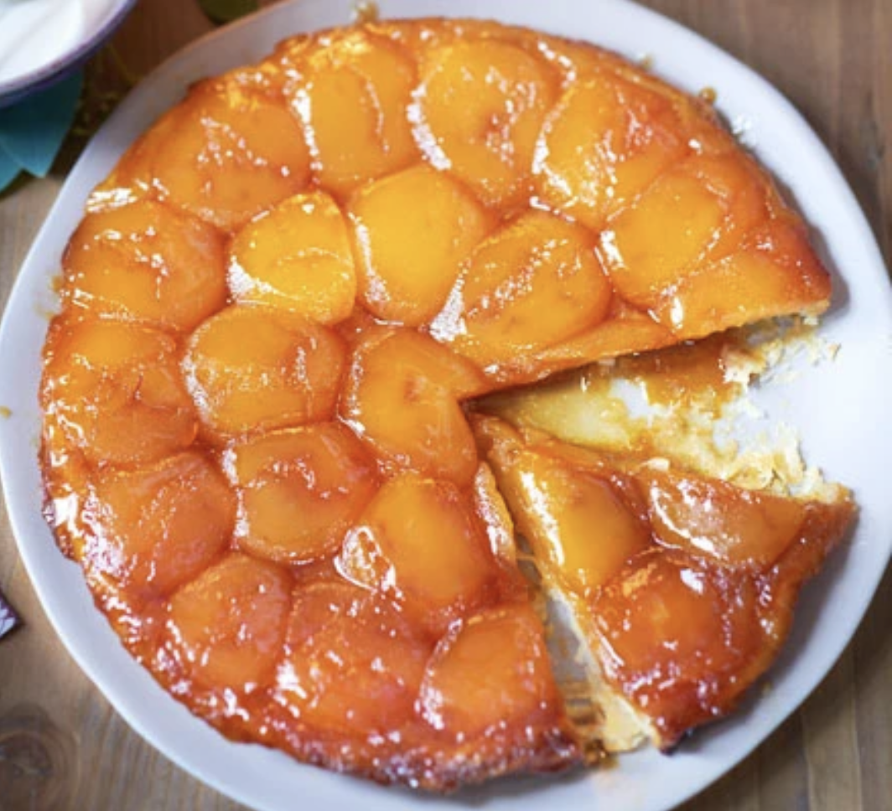

Tarte Tatin

Description
Dark and sticky caramel, sweet apples and crisp pastry combine to make this heavenly French dessert.
Ingrediants
- Pastry
- Dessert apples
- Butter
- Sugar
Steps
- Roll the pastry to a 3mm-thick round on a lightly floured surface and cut a 24cm circle, using a plate as a
guide. Lightly prick all over with a fork, place on a baking sheet, then cover and freeze while preparing
the apples.
1
- Heat oven to 180C/160C fan/gas 4. Peel, quarter and core the apples. Put the sugar in a flameproof 20cm
ceramic tatin dish or a 20cm ovenproof heavy-based frying pan and place over a medium-high heat. Cook the
sugar for 5-7 mins to a dark amber caramel syrup that’s starting to smoke, then turn off the heat and stir
in the 60g diced chilled butter.
- To assemble the tarte tatin, arrange the apple quarters very tightly in a circle around the edge of the dish
first, rounded-side down, then fill in the middle in a similar fashion. Gently press with your hands to
ensure there are no gaps. Brush the fruit with the melted butter.
- Bake in the oven for 30 mins, then remove and place the disc of frozen puff pastry on top – it will quickly
defrost. Tuck the edges down the inside of the dish and, with a knife, prick a few holes in the pastry to
allow steam to escape. Bake for a further 40-45 mins until the pastry is golden brown and crisp.